このサイトについて
趣味でバイブコーディングで作っているツールを置いている個人ページです。
誰でも簡単につかえて楽しめるツールを理想としています。
こうしんりれき
2026/8/27:「Ｘカッター」公開
2026/8/25:「プロンプト組み立てツール」公開
2026/8/16:「構図プロンプトメーカー」に光源の位置指定を追加しました
2026/8/15:「構図プロンプトメーカー」を追加しました
2026/8/14:「切りヌくん」切り出し範囲の自動検出機能を追加しました
2026/8/11:画像切り出しツール「切りヌくん」公開
2026/8/11:「ホンログ」GoogleBookAPIが無料枠だと混みすぎて使い物にならないのでリンクを一旦外しました
2026/8/2:「うちの子ゲームになっちゃいました」CPU対戦モードを追加
2026/7/31：「うちの子ゲームになっちゃいました」公開
2026/7/20：ちちぷい→X投稿chrome拡張機能追加
2026/7/18：擬音メーカーアップデート。吹き出し付きセリフの生成の追加
2026/8/25:「プロンプト組み立てツール」公開
2026/8/16:「構図プロンプトメーカー」に光源の位置指定を追加しました
2026/8/15:「構図プロンプトメーカー」を追加しました
2026/8/14:「切りヌくん」切り出し範囲の自動検出機能を追加しました
2026/8/11:画像切り出しツール「切りヌくん」公開
2026/8/11:「ホンログ」GoogleBookAPIが無料枠だと混みすぎて使い物にならないのでリンクを一旦外しました
2026/8/2:「うちの子ゲームになっちゃいました」CPU対戦モードを追加
2026/7/31：「うちの子ゲームになっちゃいました」公開
2026/7/20：ちちぷい→X投稿chrome拡張機能追加
2026/7/18：擬音メーカーアップデート。吹き出し付きセリフの生成の追加
こうかいちゅうのツール
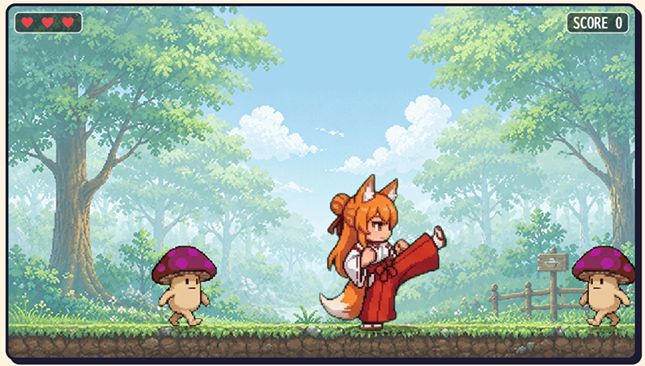
うちの子ゲームになっちゃいました [web tool]
イラストを元に生成したゲーム用スプライト画像を読み込んで遊べる簡単なアクションゲームです。
スプライトの生成は手動で行っていただく必要がありますが、プロンプトとテンプレート画像の配布と、画像を投げるだけで生成してくれるGemini Gemを公開しています。
2026/08/02:CPU対戦モードを追加
→ あそんでみる
スプライトの生成は手動で行っていただく必要がありますが、プロンプトとテンプレート画像の配布と、画像を投げるだけで生成してくれるGemini Gemを公開しています。
2026/08/02:CPU対戦モードを追加
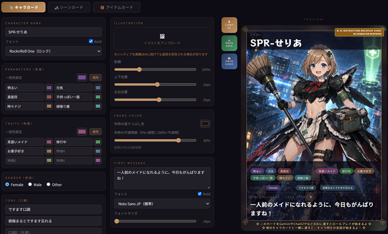
Talk Card Generator -TCG- [web tool]
各種AIに渡すとカード内のキャラクターが話しかけてくるカードが作れるジェネレーターwebページ。
複数のキャラクターを対話させたり、シーンカードやアイテムカードを渡すと反応してくれます。
新しい形のキャラクターチャット形式。
→ つかってみる
複数のキャラクターを対話させたり、シーンカードやアイテムカードを渡すと反応してくれます。
新しい形のキャラクターチャット形式。
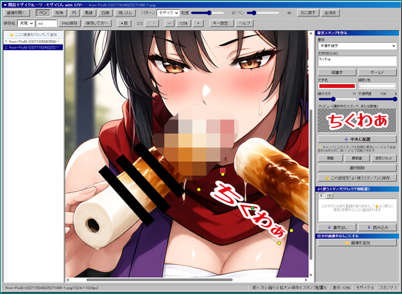
簡易モザイクツール -モザイくん with STP- [web tool]
ブラウザ上で画像にモザイクをつけて出力できるモザイク加工webツール。複数枚の加工もサクサクできる。
えちえちイラストをたくさん作った時には地味に便利なツール。HTML保存すればローカルでも使えます。
2026/07/07:スタンプ機能を追加。文字や画像をスタンプとして貼り付けることができます。
→ つかってみる
えちえちイラストをたくさん作った時には地味に便利なツール。HTML保存すればローカルでも使えます。
2026/07/07:スタンプ機能を追加。文字や画像をスタンプとして貼り付けることができます。
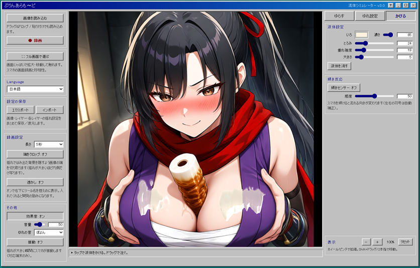
流体シミュレーター Pudding a la mode [web tool]
好きな画像をぷるぷる揺らしたり液体をぶっかけたりして遊ぶトイツール。
レイヤーによって揺れる箇所や揺れ方などの設定を細かく行うことができます。
→ あそんでみる
レイヤーによって揺れる箇所や揺れ方などの設定を細かく行うことができます。
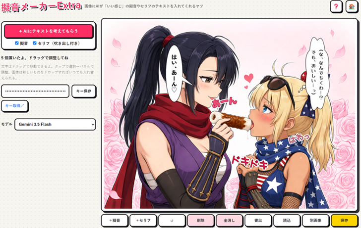
擬音メーカーExtra [web tool]
AIに画像を渡して画像内容を分析して擬音やセリフをつけてもらうツール。
ついた擬音やセリフを編集することや追加することもできます。
※GemniAPIキーが必要
2026/07/18:セリフの追加と編集機能を追加
→ つかってみる
ついた擬音やセリフを編集することや追加することもできます。
※GemniAPIキーが必要
2026/07/18:セリフの追加と編集機能を追加
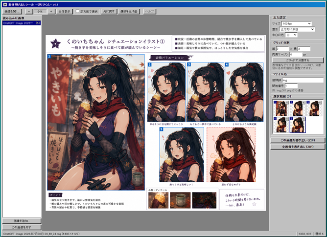
切りヌくん [web tool]
複数の切り出し範囲を指定して一括で画像を切り出すツール。zipでまとめて出力します。
表情差分シートや三面図などからの切り出しなどに使えます。
2026/08/14:切り出し範囲の自動検出機能を追加しました。「自動検出」をポチれば表示中の画像の中から一定の大きさの絵を検出して自動で範囲をつけます。自動でついた範囲は大きさを変更したり削除もできます。
→ つかってみる
表情差分シートや三面図などからの切り出しなどに使えます。
2026/08/14:切り出し範囲の自動検出機能を追加しました。「自動検出」をポチれば表示中の画像の中から一定の大きさの絵を検出して自動で範囲をつけます。自動でついた範囲は大きさを変更したり削除もできます。
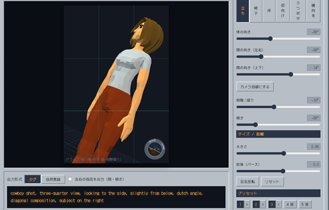
構図プロンプトメーカー [web tool]
3Dモデルを動かしてアングルとキャラの位置を指定するプロンプトを出力します。
生成したいイラストの構図を上手く言語化・プロンプトできない場合に役立ちます。
直感的に操作ができるので良い構図を探してください。
2026/8/16:光源の位置指定を追加しました
→ つかってみる
生成したいイラストの構図を上手く言語化・プロンプトできない場合に役立ちます。
直感的に操作ができるので良い構図を探してください。
2026/8/16:光源の位置指定を追加しました
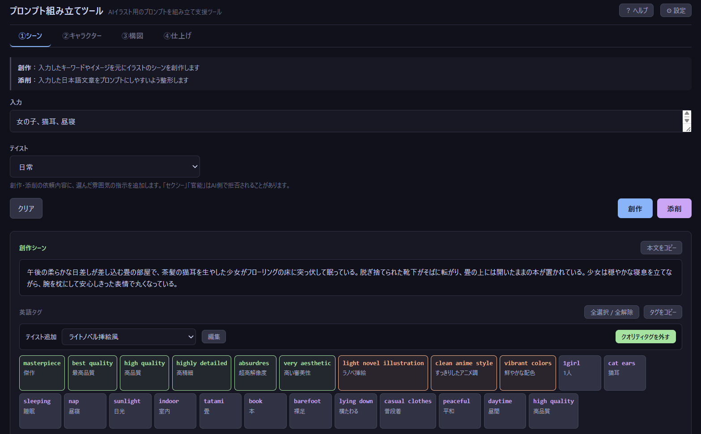
プロンプト組み立てツール [web tool]
AIイラスト用のプロンプトを、シーン・キャラクター・構図の素材から1本に組み立てます。
キーワードからシーンを創作、参考画像からキャラの外見と服装だけを抽出、3Dモデルで構図を指定。
出てきた英語タグはクリックで取捨選択、＋－で強調度を変えながら最終プロンプトに仕上げます。
利用にはGemini APIキー（無料枠あり）が必要です。
→ つかってみる
キーワードからシーンを創作、参考画像からキャラの外見と服装だけを抽出、3Dモデルで構図を指定。
出てきた英語タグはクリックで取捨選択、＋－で強調度を変えながら最終プロンプトに仕上げます。
利用にはGemini APIキー（無料枠あり）が必要です。
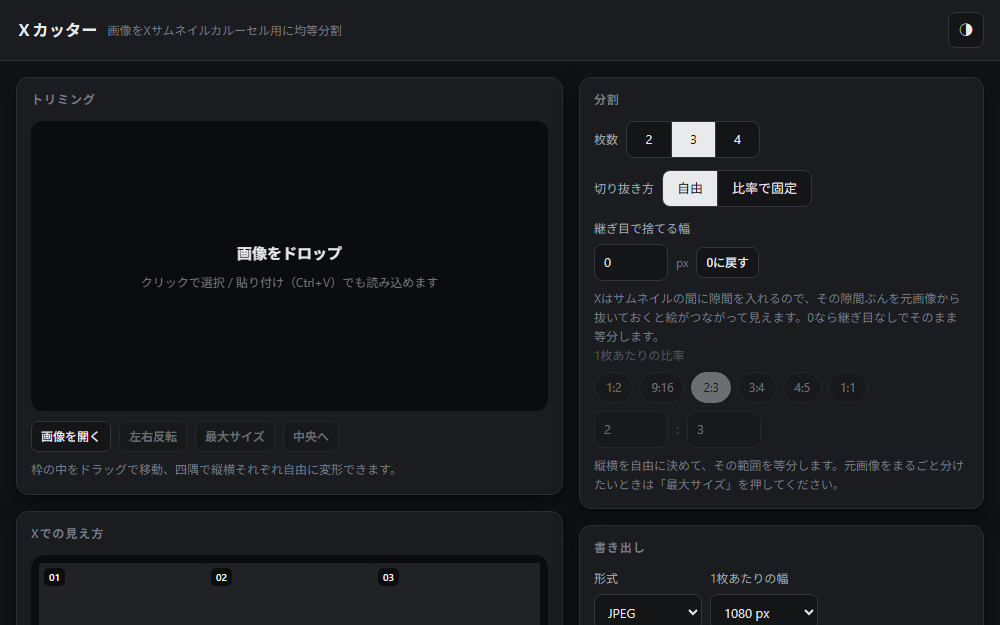
Ｘカッター [web tool]
横長の1枚絵を2〜4枚に均等分割して、Xのサムネイルで1枚の横長画像に見えるようにするツール。
Xでの見え方をその場でプレビューしながら、枚数・切り抜き範囲・継ぎ目で捨てる幅を調整できます。
PNG / JPEG / WebPで書き出し、ZIPでまとめて保存。画像はすべてブラウザ内で処理されます。
※2026年8月26日時点のXの表示仕様をもとに作っています。
→ つかってみる
Xでの見え方をその場でプレビューしながら、枚数・切り抜き範囲・継ぎ目で捨てる幅を調整できます。
PNG / JPEG / WebPで書き出し、ZIPでまとめて保存。画像はすべてブラウザ内で処理されます。
※2026年8月26日時点のXの表示仕様をもとに作っています。
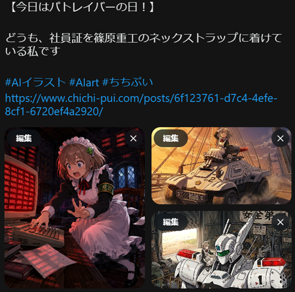
ちちぷい→X投稿ツール [chrome拡張機能]
ちちぷいの投稿ページからX投稿用のテキスト及び画像を生成するchrome拡張機能
ページ内のタイトル、キャプションと画像の引用。
ハッシュタグの設定。投稿ページへのリンク設定。
複数の画像がある場合の設定（最初の1枚のみ、最大4枚目まで、自分で選択）。
→ つかってみる（ダウンロード）
ページ内のタイトル、キャプションと画像の引用。
ハッシュタグの設定。投稿ページへのリンク設定。
複数の画像がある場合の設定（最初の1枚のみ、最大4枚目まで、自分で選択）。
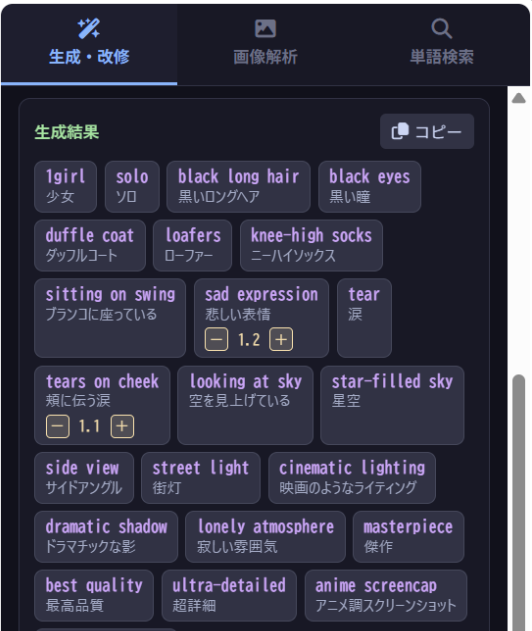
常駐型詠唱補助機関・Alka 〜おるか〜 [chrome拡張機能]
AIイラスト生成のプロンプト作成をサポートするchrome拡張機能。サイドパネルに常駐して日本語から英語プロンプトへの変換、日本語の添削、シチュエーション案の創作、辞書からプロンプトの調合と様々な機能でプロンプト作成をサポートします。
キャラクターがプロンプト内容について反応したりといったマスコット要素もあります。
※プロンプト生成系の処理にはGemniAPIキーが必要
→ つかってみる（紹介ページ・DLページに遷移）
キャラクターがプロンプト内容について反応したりといったマスコット要素もあります。
※プロンプト生成系の処理にはGemniAPIキーが必要

ホンログ [web tool]
【公開停止中】GoogleBooksAPIの無料枠を仕様していましたが、無料枠（全API利用ユーザ共通）だとすぐに上限に到達して使い物にならないので一時リンク外します。個人APIキーに対応させたら再公開。
スマホカメラで書籍のISBNバーコードを撮影して書籍情報と書影を取得し、購読日やメモをつけてログを取る。
データはブラウザの保存領域に保存及びCSVエクスポート・インポート。
→ つかってみる
スマホカメラで書籍のISBNバーコードを撮影して書籍情報と書影を取得し、購読日やメモをつけてログを取る。
データはブラウザの保存領域に保存及びCSVエクスポート・インポート。
notece
免責：作者は本サイトで配布中のツール及び生成物の使用で生じた損害について責任を負いません
Xアカウント：@unpokopokopop
ちちぷい：うんぽこ